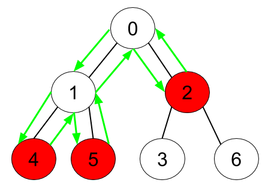
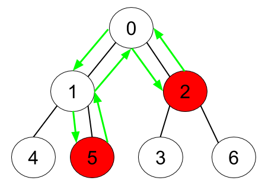

| Category | Difficulty | Likes | Dislikes |
|---|---|---|---|
| Algorithms | Medium | 3822 | 333 |
hash-table | tree | depth-first-search | breadth-first-search
cisco | facebook | microsoft | google | myntra | amazon
Given an undirected tree consisting of n vertices numbered from 0 to n-1, which has some apples in their vertices. You spend 1 second to walk over one edge of the tree. Return the minimum time in seconds you have to spend to collect all apples in the tree, starting at vertex 0 and coming back to this vertex.
The edges of the undirected tree are given in the array edges, where edges[i] = [ai, bi] means that exists an edge connecting the vertices ai and bi. Additionally, there is a boolean array hasApple, where hasApple[i] = true means that vertex i has an apple; otherwise, it does not have any apple.
Example 1:

Input: n = 7, edges = [[0,1],[0,2],[1,4],[1,5],[2,3],[2,6]], hasApple = [false,false,true,false,true,true,false]
Output: 8
Explanation: The figure above represents the given tree where red vertices have an apple. One optimal path to collect all apples is shown by the green arrows. Example 2:

Input: n = 7, edges = [[0,1],[0,2],[1,4],[1,5],[2,3],[2,6]], hasApple = [false,false,true,false,false,true,false]
Output: 6
Explanation: The figure above represents the given tree where red vertices have an apple. One optimal path to collect all apples is shown by the green arrows. Example 3:
Input: n = 7, edges = [[0,1],[0,2],[1,4],[1,5],[2,3],[2,6]], hasApple = [false,false,false,false,false,false,false]
Output: 0
Constraints:
1 <= n <= 105edges.length == n - 1edges[i].length == 20 <= ai < bi <= n - 1hasApple.length == n